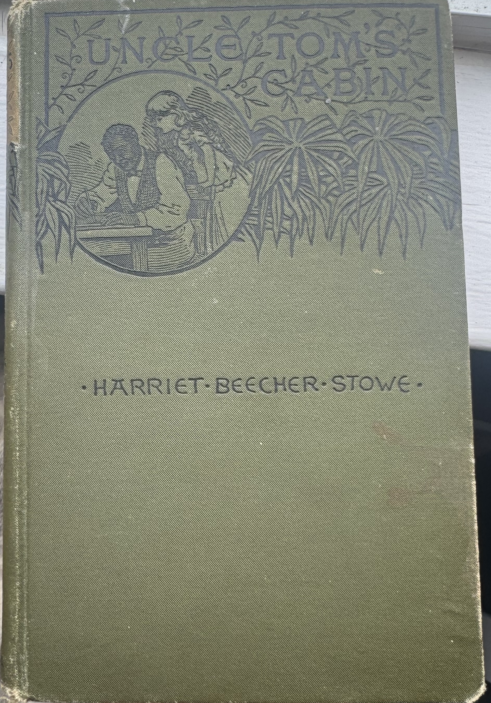
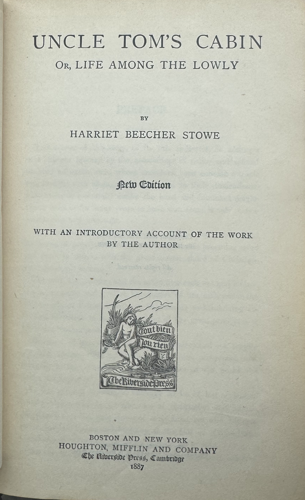
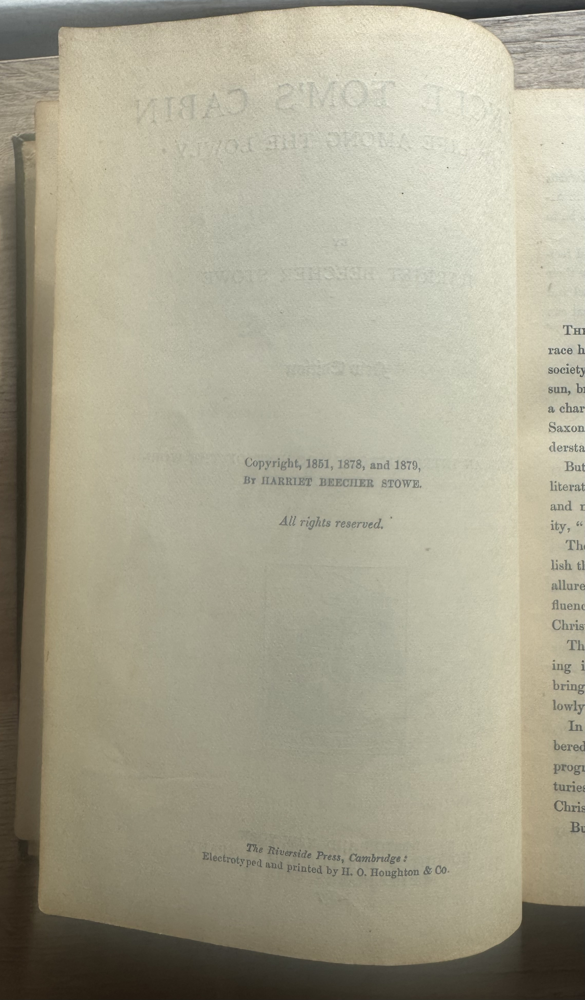
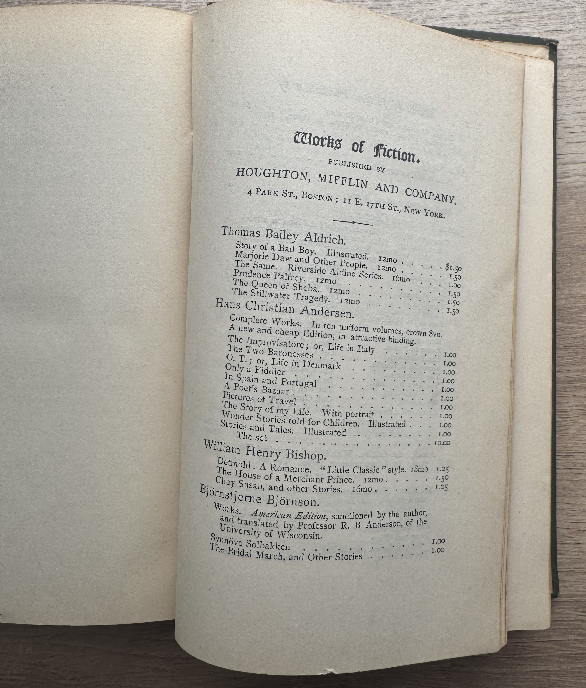
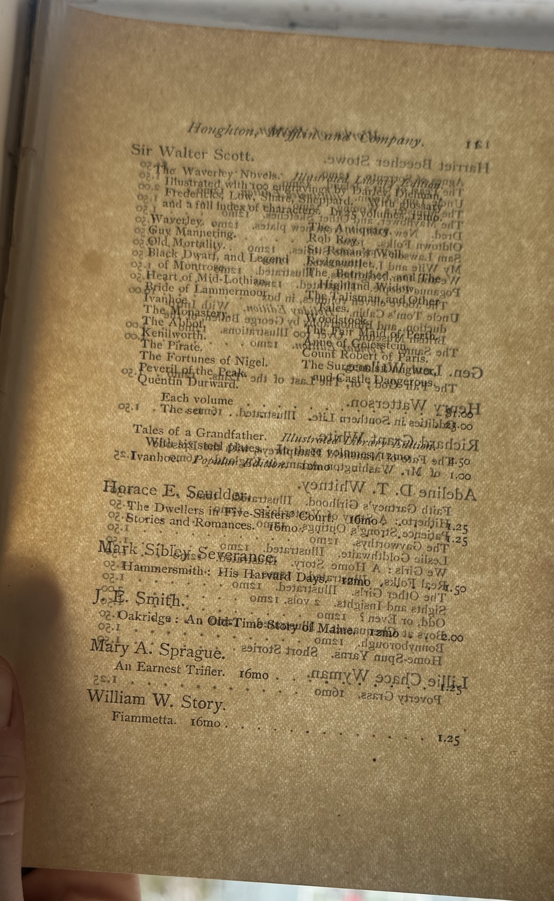
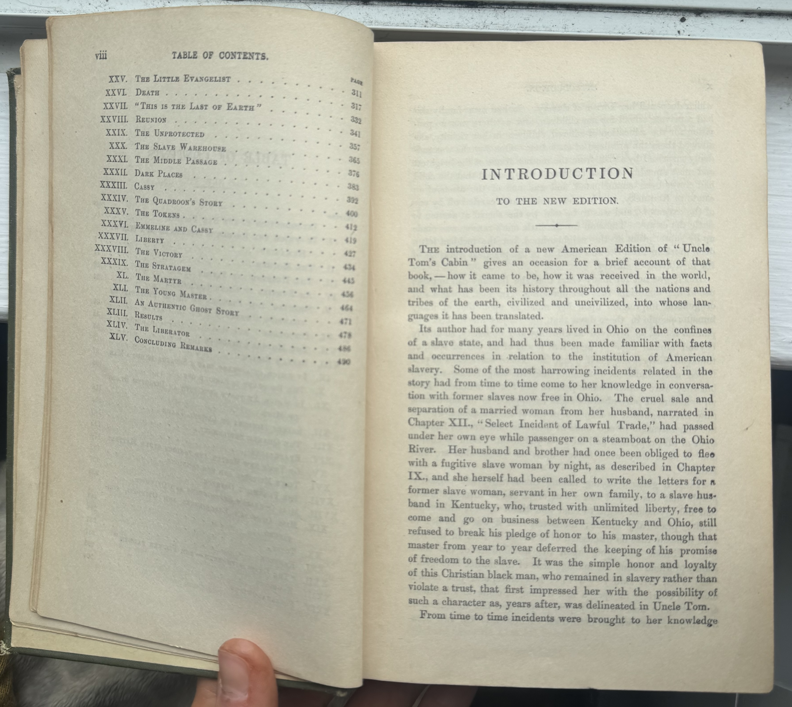
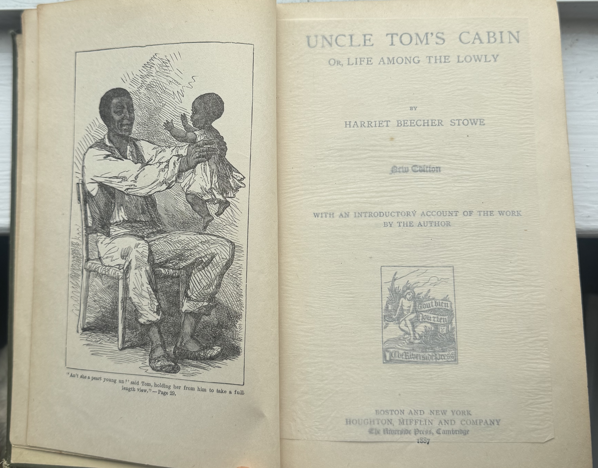
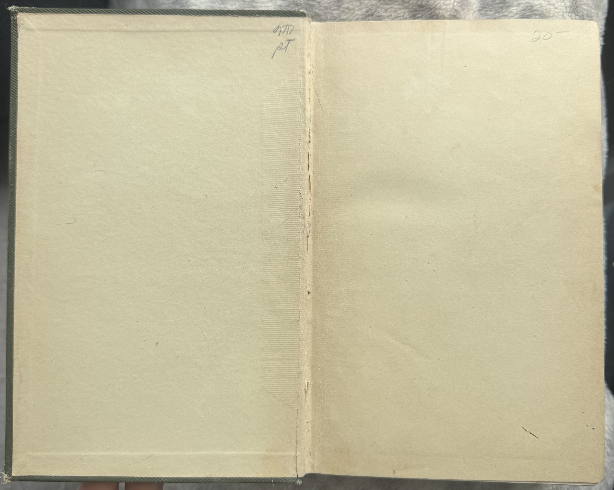

§ 1 — Introduction
A Novel, Twice Born

Object Description
- Title
- Uncle Tom's Cabin; or, Life Among the Lowly
- Author
- Harriet Beecher Stowe (1811–1896)
- Publisher
- Houghton, Mifflin and Company, Boston
- Printer
- Riverside Press, Cambridge, MA
- Date
- 1887
- Format
- 500 pp.
- Binding
- Green cloth over cardboard boards, machine-sewn signatures with Smyth sewer, glued spine, cased binding.
- Illustrations
- Approximately 105 engravings (this copy has only the frontispiece engraving)
- Price (as sold)
- $1.00 (Popular Edition)
This exhibit considers one copy of the novel, published in 1887 by Houghton, Mifflin, and Company of Boston, thirty-five years after the novel's first publication in book form and nine years before the death of Harriet Beecher Stowe. The object in my hand is not, by any measure, a rarity. The novel had been for sale uninterruptedly since 1852, and by the late 1880s, the dollar edition of the novel, the form in which the object in front of us was published, had, according to the Washington Post correspondent writing in January 1887, already sold 75,000 copies. 2 But the very fact that the object in front of us was not remarkable in any way is what makes the 1887 edition of Uncle Tom's Cabin worth examining. It was not preserved because it was precious; it was preserved because it was used.
The main idea of this exhibition is that the physical form of this 1887 edition of Uncle Tom's Cabin—its paper, binding, type, and pictures—does not simply house Stowe's words but is itself a document of cultural repositioning. For by 1887, Uncle Tom's Cabin had moved from abolitionist bombshell to literary institution, from emergency to inheritance. The decisions that Houghton Mifflin made in how to produce this book—its price, its pictures—encode a particular set of assumptions about who will read it, how they will read it, and what they will bring to it. Reading this book as an object rather than as text alone allows us to track those assumptions with great particularity.
In doing so, I draw upon three different frameworks: one for American publishing as a cultural and economic relation (Winship, McVey, Parfait); one for books as objects and the role that materiality plays in them (Benjamin, Goldsby and McGill); and one for Stowe's position within literary culture and the domestic space from which she wrote (Hedrick). Each framework offers a different window into what this edition is and what it might mean. 4,5,7,8,9,11
§ 2 — Publishing History
From Jewett to Houghton: A Publisher's Journey


The publishing history of Uncle Tom's Cabin is a story in itself about the development and transformation of the American book trade. When Uncle Tom's Cabin first appeared in book form in March 1852, it was published by John P. Jewett & Co. of Boston, a relatively small firm that had previously specialized in textbooks, religious works, and a handful of anti-slavery titles. As Claire Parfait documents in The Publishing History of Uncle Tom's Cabin, 1852–2002, Phillips, Sampson & Co. had turned the novel down before Jewett accepted it, with partner William Lee reportedly convinced that an anti-slavery novel serialized in an abolitionist journal "would not sell a thousand copies" and fearing the firm would lose its Southern audience. Jewett, by contrast, had already published anti-slavery works and was willing to take the risk. The gamble paid off in a way that no one could have foreseen. Jewett advertised the sale of 10,000 copies in two weeks in Norton's Literary Gazette, describing three paper mills and three power presses running around the clock in a vain effort to meet demand; by June 1852 he had purchased an entire page in the same journal to announce 50,000 copies sold in eight weeks. Uncle Tom's Cabin had become something genuinely new in the American book trade. 3,9
Jewett's promotional campaign was itself remarkable. Parfait shows that Jewett pioneered what we might now call a marketing blitz, flooding newspapers with advertisements focused on a single title, exploiting sales figures as a promotional tool in a way that went far beyond what other publishers of the time were doing, and commissioning spin-off products including a song about Little Eva to drive further public attention to the novel. He published the novel in three editions almost simultaneously: a two-volume cloth edition aimed at the middle class, a cheap paper-covered edition for what Jewett called "the masses," and a lavish illustrated edition for the upper-middle class. This deliberate segmentation of the reading public by price and format was, Parfait argues, a significant innovation in American publishing. 9
Eventually, Jewett's success became its own undoing. The firm overexpanded, was left with large unsold stocks, and failed financially in 1857. The plates of Uncle Tom's Cabin passed through several hands before Ticknor and Fields acquired them in 1860, and the novel was reprinted steadily but without major new investment through the 1860s and 1870s. The rights to Uncle Tom's Cabin continued through successive imprints—Fields, Osgood & Co., then James R. Osgood & Co.—until the merger that created Houghton, Osgood & Co. in 1878 and eventually Houghton, Mifflin & Co. in 1880. By the 1880s, Houghton, Mifflin had become one of the most prestigious literary publishers in America, boasting a list of such notable authors as Emerson, Longfellow, Holmes, Lowell, and Whittier. 9,11
Most significantly, however, the 1887 publication was not only published by Houghton Mifflin but was also printed by the firm's own Riverside Press in Cambridge, Massachusetts. The Riverside Press was more than just a printing press; it was a statement of intent. To have a work printed by the Riverside Press was to make a statement about that work. Sheila McVey, in her work on the growth of the American publishing industry in the nineteenth century, writes that by the 1870s and 1880s, American publishers were finally in a position to amass the capital and cultural infrastructure that would enable them to be true arbiters of literary taste, rather than simply being purveyors of British imports. The Riverside Press was that infrastructure in physical form—a homegrown alternative to the great printing establishments in London and Edinburgh. 8
The $1 Popular Edition and Its Market
The 1887 edition published by Houghton Mifflin held a particular position within the market. An article in The Washington Post, dated January 16, 1887, penned by Eliza Putnam Heaton, reads in part: "Harriet Beecher Stowe's 'Uncle Tom's Cabin' has sold 75,000 copies in its popular $1 edition, and yet Dr. Hedge, in The Forum for this month, asserts that it is 'a once famous but now forgotten' work." The price is important here. Parfait's account of the Houghton Mifflin editions shows that the firm carefully managed a tiered approach to pricing: after launching the expensive "Holiday Edition" of 1879 at $3.50, illustrated with the Thomas and Macquoid engravings and accompanied by Stowe's new introduction and a bibliography by the British Museum's George Bullen, Houghton Mifflin followed it with a cheaper two-dollar version, and then in 1885 launched the "Popular Edition" at one dollar—the edition that is almost certainly the form in which this copy was published. The one-dollar edition was timed deliberately. Parfait records that sales of the two-dollar version had begun to flag by 1884, and the "Popular Edition" was the firm's swift response, selling over 30,000 copies in its first year of publication. 2,9
Katherine Bode's work on publishing history and serialization encourages us to think about the form of the text at the moment when it reaches the reader—as a serialized installment, a privileged first edition, a cheap reprint, or a canonical collected volume. The 1887 volume marks a specific moment in the history of Uncle Tom's Cabin as a book—not the emergency of 1852, nor the flood of 1893–96 after the lapse of copyright, but the interlude of the literary classic, widely read, democratically priced, but still under the aegis of a publishing authority. 6

§ 3 — Material Description
The Physical Book: Paper, Binding, and Type

Reading the Binding
The binding of the book is one of the most eloquent of the physical details. Even before the reader opens the cover of the book and begins to read the pages, the binding has already told the reader something about the intended place of the book in the world: its price, its intended audience, and its intended use and longevity. This book is bound in green cloth over cardboard boards, a hardcover "cased" binding using the machine-sewn signature process, which is associated with the use of the Smyth Sewing Machine, which had by the 1880s become the standard process in the book industry for trade editions. The signatures are also glued along the spine before casing. This particular combination of characteristics places the book firmly in the middle of the market, not the gilt decorated binding of a presentation copy. It is a book intended to be read and kept, not looked at. Parfait notes that Houghton Mifflin's various editions of Uncle Tom's Cabin in this period were available in cloth of various colors—green, brown, purple—and that the firm was careful never to compromise the legibility or layout of their editions even in cheaper forms, maintaining a standard of typography and presentation consistent with their house reputation. 9
Walter Benjamin's famous essay "The Work of Art in the Age of Mechanical Reproduction" provides tools for thinking about what this particular copy—this particular object—has that any digital image or transcription of its text can't begin to replicate. Benjamin's term for this is "aura," the "unique phenomenon of a distance" that clings to an original object because of its uniqueness in time and space. This copy of Uncle Tom's Cabin has been in a place for over 135 years. What it has seen—what shelves it has sat on, what hands have opened its pages, what light has faded its cover—is written on its very being in ways that can't be replicated digitally. The scuffed corner of its boards, the darkening of its pages at the edges, the cracking along its spine—all of this is history. 4
Paper and Type
One of the most important and least appreciated features of a nineteenth-century book is its paper. American publishers in the 1880s were feeling the effects of a large technological shift in the world around them. Wood pulp paper, which became the standard for books printed from the 1870s onwards, is much less expensive than rag paper but is chemically acidic and thus causes books printed on it to turn yellow and flake apart within decades. However, prestige publishers such as Houghton Mifflin knew that even for standard trade editions, better-quality paper could be used, and this is likely to be true for this book. The printing is on what is likely to be wood pulp paper, which became the standard and economic choice to replace rag paper in trade books from the 1870s onwards. The pages have turned distinctly yellow at the edges, which is characteristic of the acid in this type of paper. The paper is smooth rather than rough to the eye, suggesting that it is not laid but wove paper. 9
The typeface and page layout also deserve attention. The Riverside Press is known for its typography. The typeface is a Roman serif typeface, clean and traditional, and best suited for long texts. The page layout is single-column, with moderate margins and running headings, in keeping with the reputation for clear and well-proportioned typography at Riverside Press.
Goldsby & McGill's call for "bibliographic thinking" as critical practice is directly relevant here. The 1887 Houghton Mifflin edition of Uncle Tom's Cabin is part of an extraordinarily complex publishing history that stretches back over 150 years, dozens of publishers, and hundreds of editions. Parfait's comprehensive account of this history makes clear just how self-conscious Houghton Mifflin were about the physical form of their editions, understanding that the decisions made about paper, binding, typography, and page layout were not merely commercial but cultural—decisions about what kind of object Uncle Tom's Cabin should be, and therefore what kind of text it was. Considering the physical particularities of this edition—its paper, binding, typography, page layout—is not an antiquarian diversion but rather an act of historical and cultural analysis. These physical particularities are choices: they represent decisions about readership, prestige, access, and the afterlives of this highly politicized text. 5,9

§ 4 — Visual Culture
The Illustrations: Borrowed Images, Contested Visions

The Illustrations' Hidden History
The Houghton Mifflin edition of 1887 has some 105 illustrations. It is a notable visual apparatus for any novel in the period. What it does not tell the reader is that the illustrations are not new. Parfait traces their origin directly: they were first created for a London edition published by Nathaniel Cooke in 1853, with drawings by George Thomas and T. R. Macquoid and engravings by William Thomas. Houghton, Osgood & Co. acquired the copyright to these illustrations from a London agent for ten guineas in January 1879, shortly after the new "Holiday Edition" had already been published using them—an arrangement that Parfait describes as having been negotiated somewhat after the fact. By 1887, the illustrations had been in use in American editions of the novel for eight years, and the Houghton Mifflin edition reproduces them without crediting either the original publication in which they appeared or the artists who made them. It is a significant point in the history of the novel and its illustrations, and points to the extent to which the illustrations had become seen as simply part of what Uncle Tom's Cabin looked like—so naturalized as to require no attribution. 9
The British provenance of the illustrations has implications for the racial representation in the 1887 text. Parfait observes of the Thomas and Macquoid illustrations that they were chosen in part because they were "more faithful to the text of the novel than Billings's engravings for Jewett's one-volume edition, since they showed Tom as a young man," and that they were "given their emphasis on domestic happiness shattered by slavery" well suited to Stowe's own stated aims for the novel. At the same time, they are illustrations shaped by British Victorian conventions of depicting the enslaved: sentimental and humanizing in a limited way, but also careful not to show Tom being beaten, and tending to soften or aestheticize the violence at the heart of the novel. This idealization of Tom and the avoidance of any depiction of physical brutality are characteristic of this tradition, and their adoption without comment by an American prestige publisher in the 1880s tells us something about what that publisher assumed its readers could or would want to bear. 9
Illustrations and the "Parlor" Reader
In "Parlor Literature," Joan Hedrick contends that "Stowe's writing career began in and responded to a particular readership, a world of middle-class domesticity in which literature was passed from hand to hand within families, read aloud, and judged according to its emotional truth and moral depth, not its craftsmanship." The illustrated edition is precisely this readership made tangible. Illustrations in books were social in function in nineteenth-century fiction. They encouraged communal viewing, gave visual form to characters readers had created in their imaginations, and offered a visual vocabulary for scene and character that made the fiction more accessible to conversation at the dinner table or in the parlour. Illustrations were not primarily beautiful objects but communicative ones. 7
By 1887, however, the cultural status of Uncle Tom's Cabin had changed considerably from the world of the parlor that Stowe originally depicted. The literary world, as represented by critics like Henry James, whom Hedrick examines, had begun to make a clear division between "high" literary art and the "low" sentimental fiction that Stowe represented. Parfait documents this shift in critical reputation across the novel's successive editions, showing how the paratext of the Houghton Mifflin editions—their introductions, prefaces, and promotional language—worked increasingly to position Uncle Tom's Cabin as a historical document and moral landmark rather than a living work of literature, compensating for a declining literary reputation with an enhanced historical one. The illustrations in the 1887 Uncle Tom's Cabin participate in this repositioning: by using images first made in 1853 without acknowledging their age or origin, the edition pins the novel visually to a past that is already receding, presenting it as a document of history rather than an intervention in the present. There are no illustrations in this particular copy of the novel save for the engraving on the first page, which is unusual, as the other 1887 editions were fully illustrated. This copy seems to represent a more basic version of the novel from the Houghton Mifflin publishing house, in which the textual appendages were included but the illustrations were omitted. 7,9
§ 5 — Historical Ecologies
The Edition in Its Moment: 1887 and What Came Before It
To understand what the 1887 Houghton Mifflin edition was, it helps to understand what it was not. It was not the 1852 first edition—printed in emergency circumstances in which three power presses ran day and night to meet a demand that exceeded all prior American publishing experience, and promoted by Jewett with an energy and invention that Parfait describes as anticipating the modern marketing blitz. By the time of the 1887 edition, the novel was not news. The Civil War that it had been credited with helping to spark was now behind it. Stowe herself was old, having lived to see the institution she had set out to destroy abolished and then to see its afterlives reconstitute themselves in new forms during Reconstruction. Uncle Tom himself had become a cultural shorthand—a figure reproduced in "Tom shows" that traveled the United States into the twentieth century, in commodities ranging from playing cards to candy, and in a theatrical tradition that had by the 1880s developed "double" shows featuring parades and sideshows in which Stowe's characters were simplified into crowd-pleasing caricatures. 9,10
In this ecology, the 1887 edition holds a particular and slightly nervous place. Eliza Putnam Heaton, writing for the Washington Post just days before the likely date of this edition's publication, observed that "although one critic has called it 'forgotten,' at a New York club, it is voted by women readers the one they most admire among American writers." The readership of this book had changed. It was no longer the pressing abolitionist tract it had been in 1852, nor yet the children's classic it would become after 1893, when the copyright expired. It held a place in the culture as "the one you should have read, or did read, when you were a child, but not the one everyone is currently reading." 2
Parfait's account of the Houghton Mifflin years shows clearly what was at stake in this transitional moment. The firm knew that the copyright would expire in 1893 and prepared deliberately, launching multiple editions at different price points in the early 1890s to saturate the market before competitors could enter it. The 1887 "Popular Edition" was part of this longer strategy of maintaining authoritative control over the text while it still had commercial and cultural value. After 1893, the book was anyone's property—and Parfait documents the flood of cheap editions that followed, from library series to paper-covered pamphlets, many of them recycling the same plates under different imprints with minimal paratextual apparatus. Before 1893, however, it was still Stowe's and Houghton Mifflin's, and the firm's careful management of its editions in these years was an effort to consolidate that authority while time remained. 9
That the drawings for the 1887 edition were made in 1853 for a British edition and are now being reprinted without credit more than thirty years later is an ecological complexity that speaks to this moment of transition. The drawings are a form of palimpsest: British Victorian conventions for illustrating American slavery, used by an American publisher of prestige for a readership that was neither the abolitionist readers of 1852 nor the children of 1895. They are illustrations without acknowledged provenance, for a readership in transition. 9
§ 6 — Provenance
This Copy's History

Every book has a "provenance," a trail of hands that have owned it from printer to current owner. For most popular books published in the 19th century, it is hard to know much about this trail. This book has none of the usual signs of ownership: no name in the front, no bookplate, no library stamp. It has only one sign of ownership history: the price, penciled in on the front page. It was priced at $20. This was almost certainly a used bookstore price. It was written by a bookseller, not a reader. The lack of personal inscriptions also speaks to the book's history. This is a book that was passed from hand to hand without leaving a name behind.
The book's provenance is one of family inheritance, passed down to me from my mother's uncle, who spent much of his life collecting old books. The price on the first page, $20 in pencil, likely indicates that he bought it at a second-hand store, probably between 1975 and 1990, a price that in adjusted dollars translates to between $50 and $100. His collection, now partly in our possession, also includes 19th-century editions of Rudyard Kipling, Herman Melville, and other literary luminaries of the day. The act of collecting and re-gifting books is also part of the ecology of this object, and one that tells us as much about our values for print culture as the original publication did for the Victorians. Parfait observes that many copies of the illustrated Houghton Mifflin editions were treasured and handed down within families, sometimes with inscriptions, sometimes with newspaper clippings about the novel pasted onto the flyleaves by successive owners. This copy has neither, but its survival in a private collection is its own form of evidence: a book kept because it mattered, even if no one thought to say why. 9
§ 7 — Reflection
An Analogue Object in a Digital Exhibition
There is something paradoxical in presenting a book of the 19th century, a thing characterized by its individual physical presence, in the form of a virtual exhibition. In his essay on the work of art in the age of mechanical reproduction, Walter Benjamin wrote that "the technique of reproduction detaches the reproduced object from the domain of tradition. By making many reproductions it substitutes a plurality of copies for a unique existence." In making this virtual exhibition, I have done precisely that—taken photographs of a unique object, uploaded them to the web, arranged them in a webpage, and made them accessible to an indeterminate number of viewers who will never touch the book. 4
Yet what Benjamin calls "withering"—the aura of the work—is what this exhibition has allowed me to see most clearly. It was in the process of physical examination, of holding the book to the light to read the paper, of tracing a finger over the grain of the cloth binding, of considering the placement of the engravings in relation to the text—that the most fruitful questions were posed. The digital format allows me to share the findings of this process with a reader who is unable to access the original directly. It also makes the limitations of the digital format seem unusually clear—a picture of a book spine cannot communicate the weight of the book, the smell of its paper, or the resistance of the spine as it opens.
The form I have chosen, the linear illustrated web page, is also part of the tradition of the exhibition catalogue, which is the kind of form that accompanies and augments the experience of viewing an object in real time, rather than replacing it. Like the illustrated Victorian edition, it presents image and text in a particular order, an order which is intended to take the reader through a particular set of ideas. The difference, of course, is that the order of the Victorian edition was determined by the physical arrangement of its pages, while the exhibition can be viewed in any order, and can be linked to other sources. Whether or not this is an improvement, or simply another, equally limited, relationship with knowledge, is something the course has taught me not to answer too hastily.
Bibliography
Works Cited and Consulted
Primary Sources
- Primary Stowe, Harriet Beecher. Uncle Tom's Cabin; or, Life Among the Lowly. Boston: Houghton, Mifflin and Company; Cambridge: Riverside Press, 1887.
- Primary Heaton, Eliza Putnam. "Whims and Fancies." The Washington Post, January 16, 1887.
- Primary Jewett, John P. Advertisement: "Extraordinary Demand for 'Uncle Tom's Cabin.'" Norton's Literary Gazette, 1852.
Course Readings
- Course Benjamin, Walter. "The Work of Art in the Age of Mechanical Reproduction." In Illuminations: Essays and Reflections, edited by Hannah Arendt. New York: Houghton Mifflin Harcourt, 1968. Pages 180–201.
- Course Goldsby, Jacqueline, and Meredith L. McGill. "What is 'Black' about Black Bibliography?" Papers of the Bibliographical Society of America 116, no. 2 (June 2022): 161–195.
Secondary Sources
- Secondary Bode, Katherine. "Beyond the Book: Publishing in the Nineteenth Century." In Reading by Numbers: Recalibrating the Literary Field. London: Anthem Press, 2012.
- Secondary Hedrick, Joan D. "Parlor Literature: Harriet Beecher Stowe and the Question of 'Great Women Artists.'" Signs 17, no. 2 (Winter 1992): 275–303.
- Secondary McVey, Sheila. "Nineteenth Century America: Publishing in a Developing Country." The Annals of the American Academy of Political and Social Science 421 (September 1975): 67–80.
- Secondary Parfait, Claire. The Publishing History of 'Uncle Tom's Cabin,' 1852–2002. Aldershot: Ashgate, 2007.
- Secondary Patkus, Ronald D., and Mary C. Schlosser. "Aspects of the Publishing History of Uncle Tom's Cabin, 1851–1900." Archives & Special Collections Library, Vassar College. Exhibition catalogue, 2001–2005.
- Secondary Winship, Michael. "'The Greatest Book of Its Kind': A Publishing History of 'Uncle Tom's Cabin.'" Proceedings of the American Antiquarian Society 109 (1999): 309–332.
- Secondary Winship, Michael. "Uncle Tom's Cabin: History of the Book in the 19th-Century United States." University of Virginia.